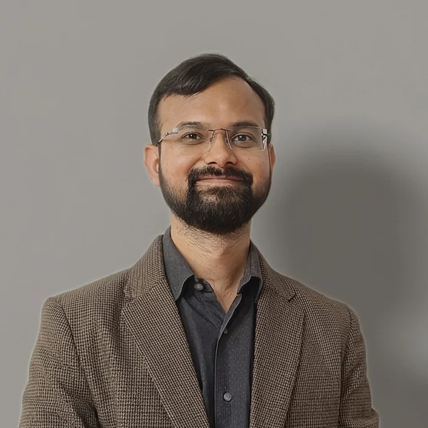

GROUP LEAD
Tanay Bhatt
Skin biology, host defense
and biological measurement.
- Principal Investigator, Reference Standard ProjectA collaboration between NCBS and C-CAMP
- Collaborator, Colin Jamora Laboratory
- Co-founder, Koshkey
Tanay’s research spans epithelial repair, antimicrobial peptide biology, viral infection and biological reference standards. His work connects investigations of tissue function and host defense with the development of reference materials and assays for reproducible biomedical measurement.
Affiliations & disclosures